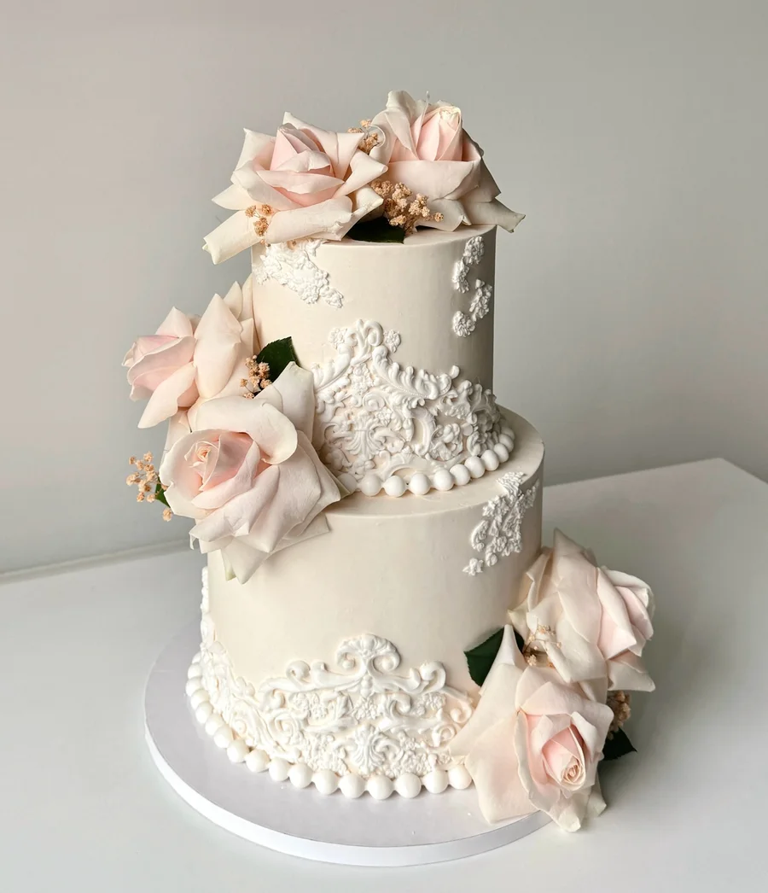
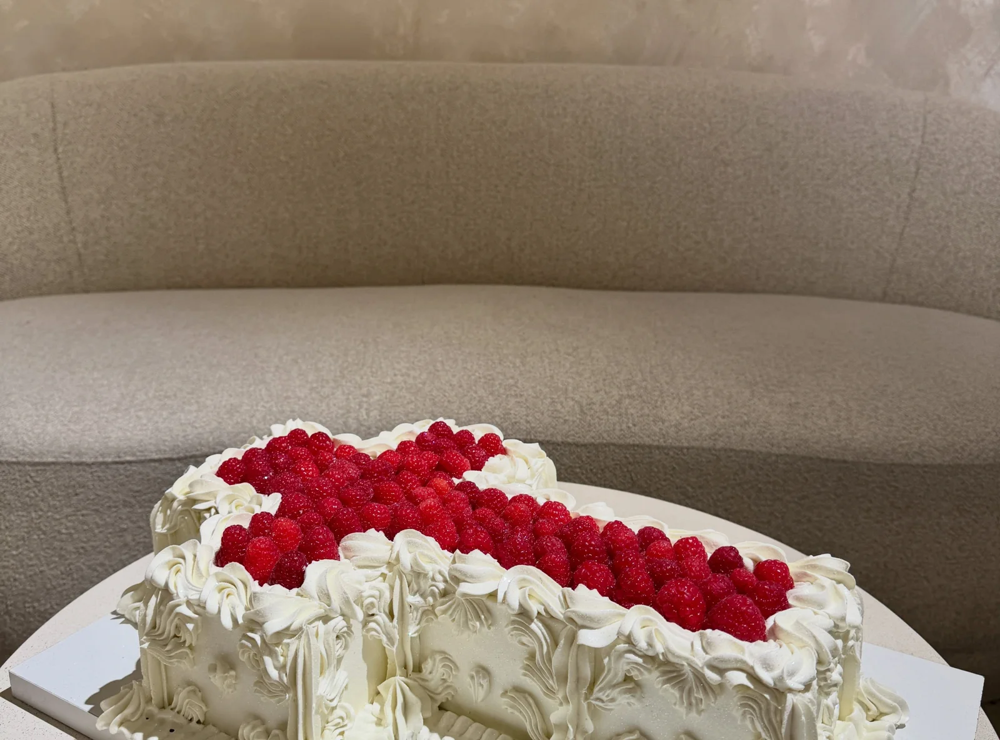
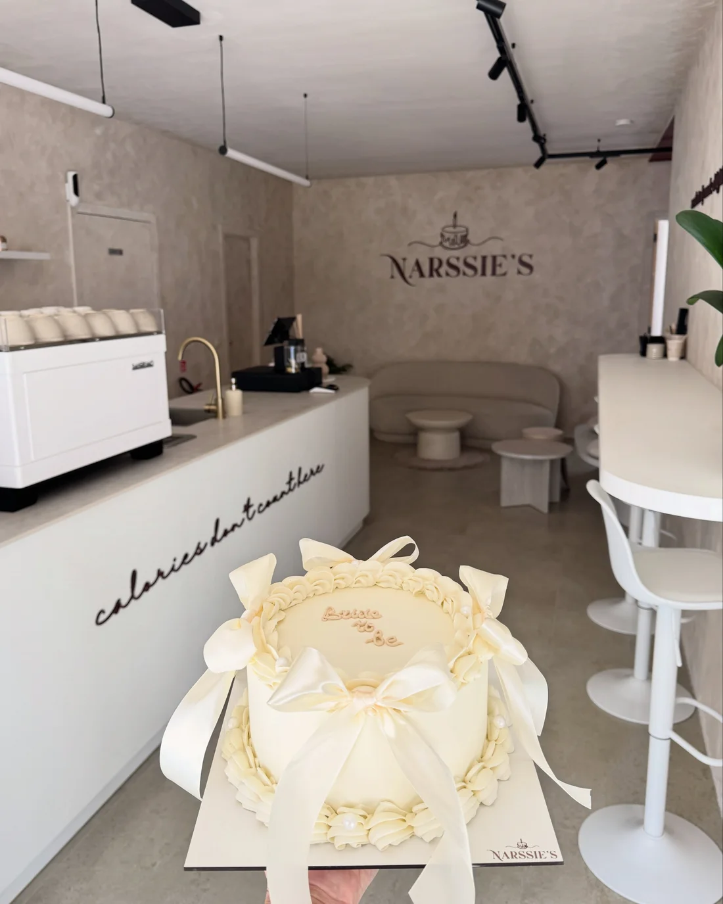
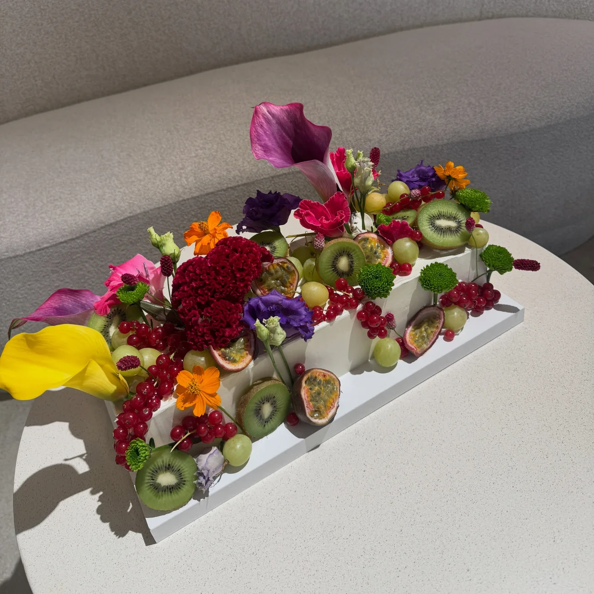
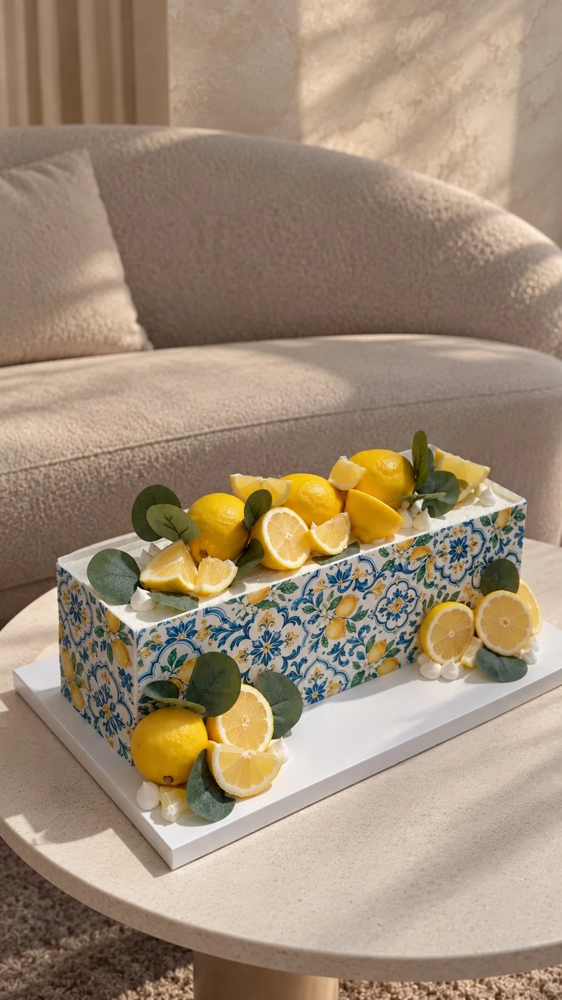
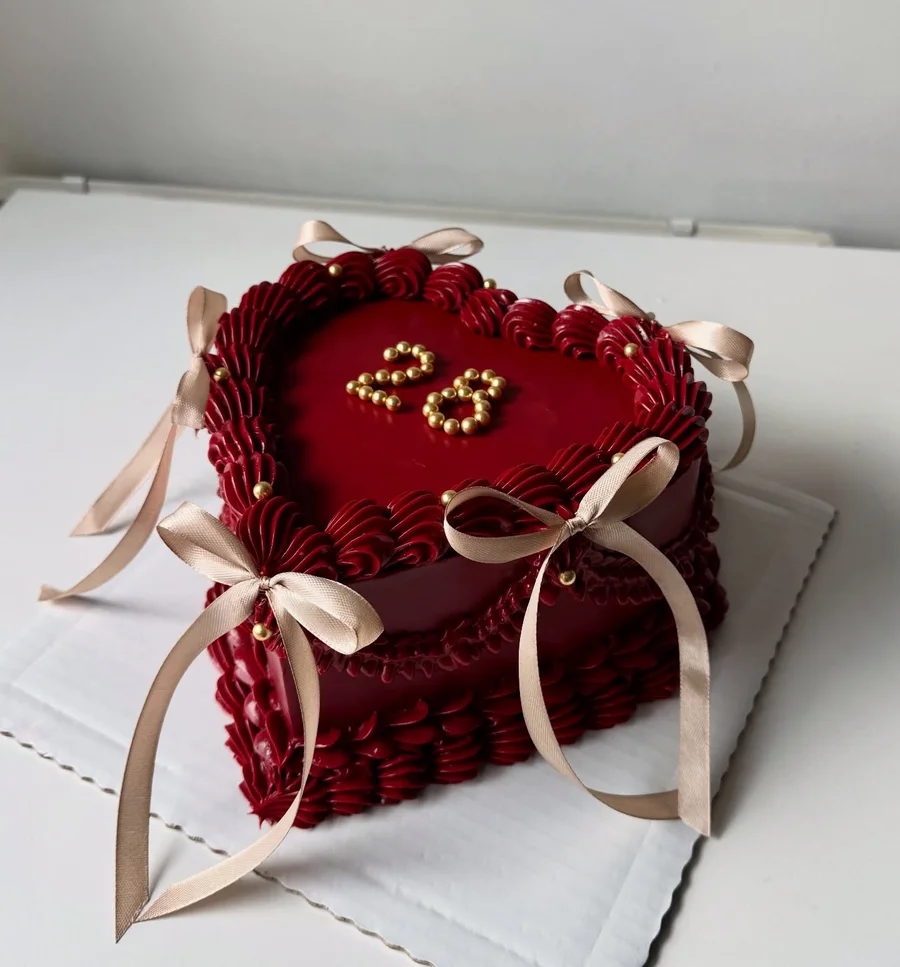
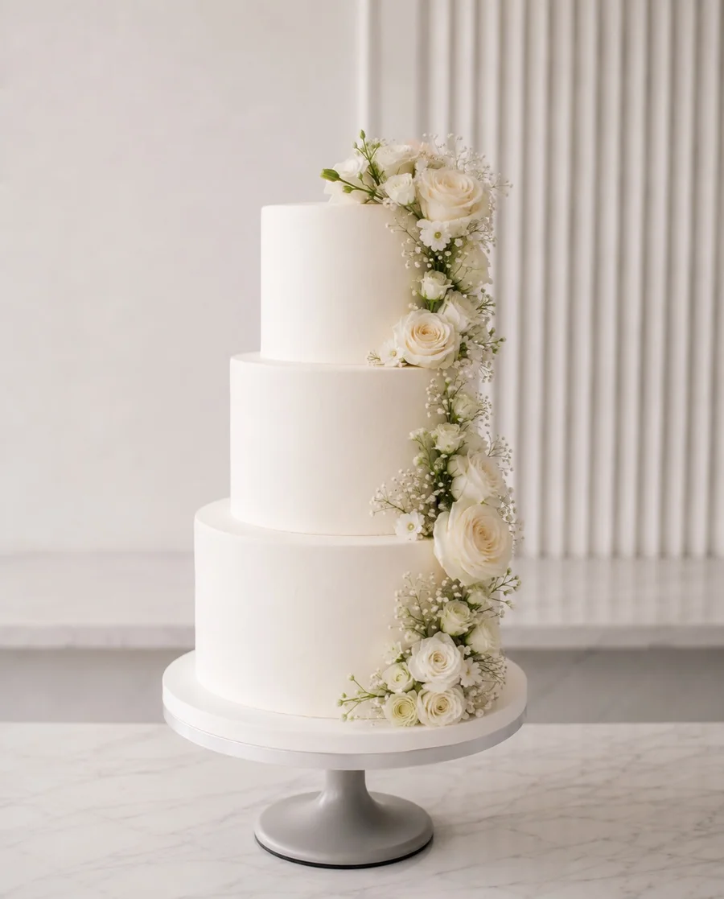
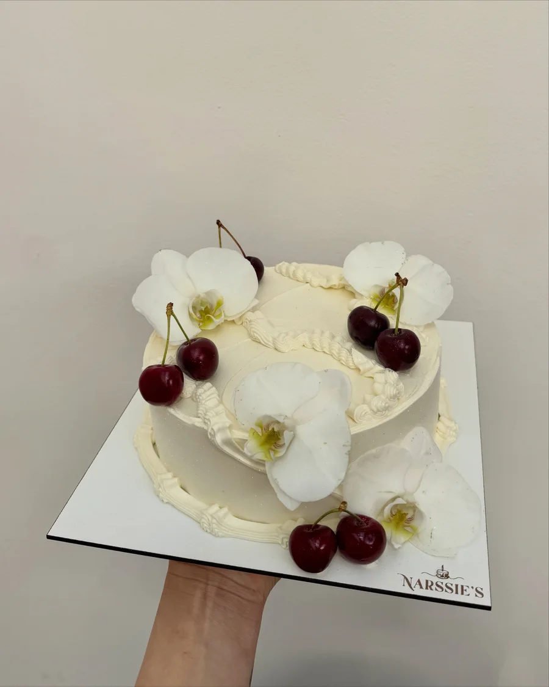

Wedding
Etages, verse rozen en kantwerk in room.

Ronde zetels, een kalkmuur in zandtinten en ons logo groot aan de wand. Je schuift aan voor een cappuccino, een matcha of een milkshake, met het dessert van de week erbij.


Onze lange taarten, tot anderhalve meter lang, voor een huwelijk of een groot feest. Met bloemen en fruit, of met wafer paper, blad per blad.


"Beloved but unposted. Long wedding cakes are a crush."Narssie's op Instagram
Een huwelijk, een doop, een verjaardag of een bento cake voor twee. Vertel ons wat je in gedachten hebt, wij maken er iets moois van.

Etages, verse rozen en kantwerk in room.

Hartjes, strikken en ouderwetse spuitranden.

Een waterval van witte bloemen langs de etages.

Kersen en orchideeën, of net iets helemaal anders.
Een taart nodig voor een feest?Stuur ons een bericht op Instagram of bel 02 318 69 44. We denken graag mee.
Stuur een berichtElke week staan er nieuwe desserts in de toonbank. Mango met framboos, koepeltjes met bloemen, een rood hartje. Daarbij schenken we:


"Ik ben hier al meerdere keren geweest voor een lekkere koffie en een koekje. Maar ik was pas écht verbaasd toen ik de verjaardagstaart voor mijn dochter bestelde… Zooo lekker én ook nog eens prachtig! Absoluut al mijn geld waard."
Jb KGoogle"Ik had last minute een verjaardag en viel bij hen binnen. Meteen werd ik vriendelijk onthaald en enkele uurtjes later mocht ik de taart al ophalen. Bovendien viel de taart bij iedereen in de smaak!"
Valerie WaucquezGoogle"Super lekkere gebakjes, koffies, milkshakes en limonades en heel vriendelijke mensen. Zeker aan te raden!!"
Lara GernaeyGoogle
Stationsstraat 15, 1861 MeiseWolvertem
Ik maakte deze demo voor jullie om te tonen wat er kan. Na een kort gesprek maak ik er iets veel persoonlijkers van, helemaal naar jullie wens.
Vrijblijvend. Ik kom langs of we bellen.
Op maat, op jullie eigen domein.
Geen voorschot. Jullie betalen pas als alles klaar is.
Hosting, domeinnaam en kleine wijzigingen, zoals nieuwe openingsuren.
Omdat een voorbeeld meer zegt dan een mail. Zo zien jullie meteen wat er kan, en het kost jullie niets.
Nee. Het gesprek is vrijblijvend. Vinden jullie het niks, dan is het daarmee gedaan.
Na ons gesprek staat jullie site binnen 10 tot 14 dagen online.
Zeker. Jullie domeinnaam kan gewoon blijven, de nieuwe site komt in de plaats van de oude.
Nee, dat doe ik op basis van ons gesprek. Eigen foto's zijn mooi meegenomen, maar niet nodig om te starten.